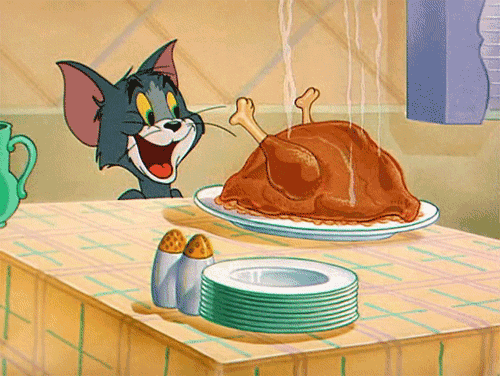

Roasted Chicken

Ingredients
- 1 (5 to 6 pound) roasting chicken
- Kosher salt
- Freshly ground black pepper
- 1 large bunch fresh thyme, plus 20 sprigs
- 1 lemon, halved
- 1 head garlic, cut in half crosswise
- 2 tablespoons (1/4 stick) butter, melted
- 1 large yellow onion, thickly sliced
- 4 carrots cut into 2-inch chunks
- 1 bulb of fennel, tops removed, and cut into wedges
- Olive oil
Source: foodnetwork.com
Home